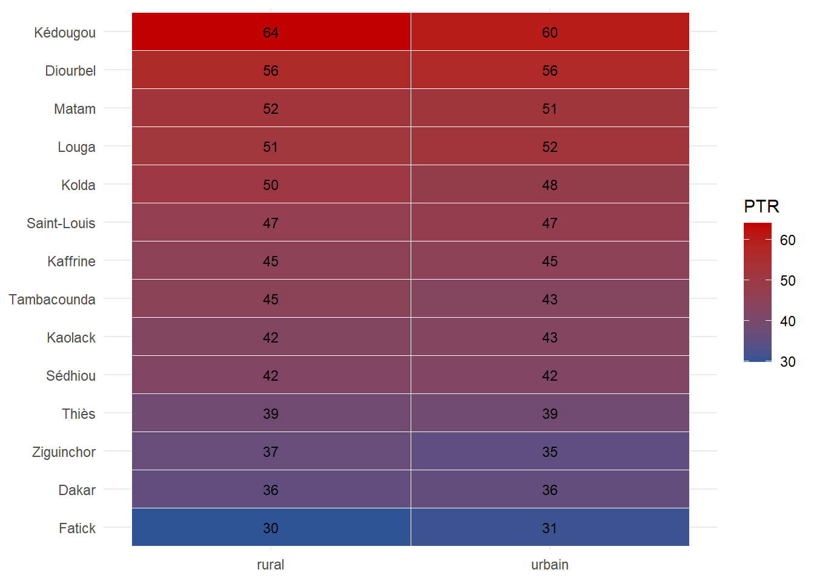
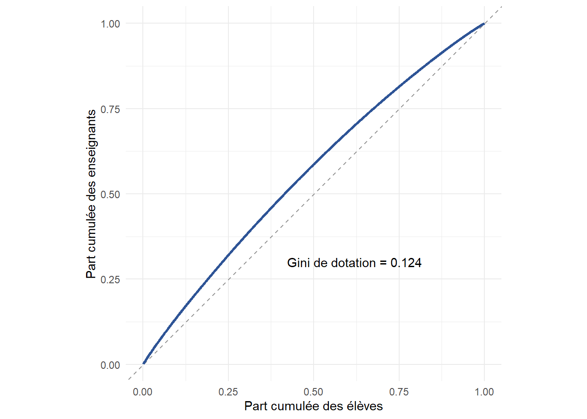

library(dplyr)
library(tidyr)
library(ggplot2)
library(readr)
library(knitr)Série Sénégal — Moteur d’indicateurs sectoriels (outil transversal)
Bibliothèque R réutilisable : scolarisation, ressources, équité — avec désagrégation générique
R
indicators
education
Senegal
equity
EMIS
reproducibility
transversal
Brique d’inception de la série, adossée au socle de données. Ce notebook livre un module R réutilisable et documenté qui calcule les indicateurs sectoriels standard à partir des fichiers canoniques du socle : taux de scolarisation (TBS, TNS), indice de parité entre genres (accès), ratio élèves-maître, dotation et parité enseignante, composition de l’offre préscolaire, et une mesure de concentration de l’allocation (Lorenz + Gini). Le cœur est une fonction de désagrégation générique (indicateur × variables de ventilation), sur laquelle tous les indicateurs sont construits ; elle est prête à recevoir la dimension « inclusion » dès qu’elle sera disponible. Une démonstration sur les données du socle et une notice d’utilisation complètent l’outil. 100 % R, monolingue, pensé pour être repris par une équipe technique nationale.
1 Objet
Cet outil a pour intention de répondre aux besoins formulés par « développer des outils automatisés de calcul d’indicateurs du secteur éducatif et leur documentation » du volet transversal de l’annonce. La logique est celle d’un consultant en phase de cadrage : avant toute analyse thématique, on se dote d’une bibliothèque d’indicateurs standard, réutilisable par tous les volets et transférable à une équipe nationale. Le module est volontairement monolingue (R) et construit sur une fonction de désagrégation générique, de sorte qu’ajouter une dimension de ventilation (milieu, IA, genre, et demain le statut d’inclusion) ne demande aucune réécriture.
2 Partie A — Bibliothèque de fonctions
# --- Generic disaggregated RATIO -------------------------------------------
# num, den : names (strings) of the numerator / denominator columns to sum.
# by : character vector of grouping variables (empty => national total).
# pour : multiplier (1 = ratio, 100 = percentage).
ratio_desagrege <- function(df, num, den, by = character(0), pour = 1) {
g <- if (length(by)) group_by(df, across(all_of(by))) else df
summarise(g,
numerateur = sum(.data[[num]], na.rm = TRUE),
denominateur = sum(.data[[den]], na.rm = TRUE),
valeur = pour * numerateur / denominateur,
n_unites = n(), .groups = "drop")
}
# --- Generic COMPOSITION share ---------------------------------------------
# cat : name (string) of the categorical column whose shares we want.
# effectif_col : name (string) of the weight/size column to sum.
part_desagregee <- function(df, cat, effectif_col, by = character(0)) {
group_by(df, across(all_of(c(by, cat)))) |>
summarise(eff = sum(.data[[effectif_col]], na.rm = TRUE), .groups = "drop_last") |>
mutate(part = eff / sum(eff)) |>
ungroup()
}
# --- Concentration: weighted Gini and Lorenz curve -------------------------
gini <- function(x, w = rep(1, length(x))) {
o <- order(x); x <- x[o]; w <- w[o]
p <- c(0, cumsum(w) / sum(w)) # cumulative population share
L <- c(0, cumsum(w * x) / sum(w * x)) # cumulative value share
1 - sum(diff(p) * (L[-1] + L[-length(L)]))
}
lorenz <- function(x, w = rep(1, length(x))) {
o <- order(x); x <- x[o]; w <- w[o]
tibble(p = c(0, cumsum(w) / sum(w)), L = c(0, cumsum(w * x) / sum(w * x)))
}# Pupil-teacher ratio, disaggregable by any school-level variable(s).
indic_ptr <- function(ecoles, by = character(0)) {
ratio_desagrege(ecoles, "enrol", "n_teachers", by = by) |>
rename(eleves = numerateur, enseignants = denominateur, ptr = valeur)
}
# Schooling coverage by region (needs the reference population as denominator).
# Returns GER (TBS), NER (TNS) and the gender parity index of access (IPS).
indic_scolarisation <- function(ecoles, pop) {
enr <- ecoles |>
group_by(region) |>
summarise(insc_total = sum(enrol),
insc_f = sum(eleves_filles),
insc_g = sum(eleves_garcons), .groups = "drop")
enr |>
left_join(pop, by = "region") |>
mutate(
TBS = 100 * insc_total / pop_6_11_total,
TBS_filles = 100 * insc_f / pop_6_11_filles,
TBS_garcons = 100 * insc_g / pop_6_11_garcons,
IPS_acces = TBS_filles / TBS_garcons, # < 1 => au détriment des filles
TNS = pmin(100, 100 * insc_total * part_age_officiel / pop_6_11_total)) |>
select(region, TBS, TBS_filles, TBS_garcons, IPS_acces, TNS)
}
# Teacher gender parity, disaggregable (share female and female/male index).
indic_parite_enseignants <- function(enseignants, by = character(0)) {
g <- if (length(by)) group_by(enseignants, across(all_of(by))) else enseignants
summarise(g,
n_f = sum(genre == "F"), n_h = sum(genre == "H"),
part_femmes = n_f / (n_f + n_h),
ips_enseignants = n_f / n_h, .groups = "drop")
}
# Preschool supply composition (share of centres / of enrolment by type).
indic_offre_prescolaire <- function(prescolaire, by = character(0)) {
part_desagregee(prescolaire, cat = "type", effectif_col = "enrol", by = by)
}3 Partie B — Démonstration sur les données du socle
dir_in <- "files/projet_50"
ecoles <- read_csv(file.path(dir_in, "ecoles.csv"), show_col_types = FALSE)
enseignants <- read_csv(file.path(dir_in, "enseignants.csv"), show_col_types = FALSE)
prescolaire <- read_csv(file.path(dir_in, "prescolaire_centres.csv"), show_col_types = FALSE)
pop <- read_csv(file.path(dir_in, "population_reference.csv"), show_col_types = FALSE)scol <- indic_scolarisation(ecoles, pop)
nat_scol <- ecoles |>
summarise(insc = sum(enrol), insc_f = sum(eleves_filles), insc_g = sum(eleves_garcons)) |>
bind_cols(pop |> summarise(P = sum(pop_6_11_total), Pf = sum(pop_6_11_filles),
Pg = sum(pop_6_11_garcons), off = first(part_age_officiel))) |>
mutate(TBS = 100 * insc / P,
IPS = (100 * insc_f / Pf) / (100 * insc_g / Pg),
TNS = pmin(100, 100 * insc * off / P))
tibble(
Indicateur = c("Taux brut de scolarisation (TBS)",
"Taux net de scolarisation (TNS)",
"Indice de parité (accès, F/G)",
"Ratio élèves-maître (national)",
"Indice de parité enseignante (F/H)",
"Part du privé au préscolaire",
"Part des Cases des tout-petits (CTP)"),
Valeur = c(
sprintf("%.1f %%", nat_scol$TBS),
sprintf("%.1f %%", nat_scol$TNS),
sprintf("%.2f", nat_scol$IPS),
sprintf("%.1f", indic_ptr(ecoles)$ptr),
sprintf("%.2f", indic_parite_enseignants(enseignants)$ips_enseignants),
sprintf("%.1f %%", 100 * filter(indic_offre_prescolaire(prescolaire), type == "prive")$part),
sprintf("%.1f %%", 100 * filter(indic_offre_prescolaire(prescolaire), type == "CTP")$part))
) |> kable(caption = "Indicateurs nationaux de synthèse.")| Indicateur | Valeur |
|---|---|
| Taux brut de scolarisation (TBS) | 80.4 % |
| Taux net de scolarisation (TNS) | 64.3 % |
| Indice de parité (accès, F/G) | 0.84 |
| Ratio élèves-maître (national) | 41.1 |
| Indice de parité enseignante (F/H) | 0.69 |
| Part du privé au préscolaire | 15.0 % |
| Part des Cases des tout-petits (CTP) | 33.6 % |
Lecture. Le tableau national situe le système : TBS de 80,4 %, TNS de 64,3 % (l’écart traduisant la sur-âge et la scolarisation tardive), ratio élèves-maître de 41, et une offre préscolaire portée par le public et les Cases des tout-petits, le privé restant marginal (15 % des effectifs). C’est le cadrage descriptif du diagnostic sectorie réalisé à partir de notre socle/bac à sable
scol |>
arrange(desc(TBS)) |>
mutate(across(c(TBS, TBS_filles, TBS_garcons, TNS), ~round(.x, 1)),
IPS_acces = round(IPS_acces, 2)) |>
kable(caption = "Taux de scolarisation par région (TBS/TNS, %, et indice de parité d'accès).")| region | TBS | TBS_filles | TBS_garcons | IPS_acces | TNS |
|---|---|---|---|---|---|
| Dakar | 92.1 | 90.7 | 93.5 | 0.97 | 73.7 |
| Thiès | 89.9 | 89.4 | 90.5 | 0.99 | 71.9 |
| Kaolack | 84.8 | 81.8 | 87.6 | 0.93 | 67.8 |
| Diourbel | 84.5 | 67.3 | 101.1 | 0.67 | 67.6 |
| Fatick | 81.4 | 81.1 | 81.7 | 0.99 | 65.1 |
| Saint-Louis | 78.6 | 70.4 | 86.4 | 0.81 | 62.9 |
| Louga | 76.2 | 64.9 | 87.0 | 0.75 | 60.9 |
| Ziguinchor | 71.9 | 65.5 | 78.0 | 0.84 | 57.5 |
| Kaffrine | 71.7 | 52.9 | 89.8 | 0.59 | 57.4 |
| Matam | 68.5 | 59.3 | 77.3 | 0.77 | 54.8 |
| Kolda | 67.7 | 60.7 | 74.4 | 0.82 | 54.2 |
| Sédhiou | 66.0 | 52.7 | 78.7 | 0.67 | 52.8 |
| Tambacounda | 65.6 | 50.6 | 80.0 | 0.63 | 52.5 |
| Kédougou | 59.2 | 44.3 | 73.6 | 0.60 | 47.4 |
Lecture. Le gradient géographique de notre simulation est net et crédible : le TBS va de ~92,1 % à Dakar à ~59,2 % à Kédougou. Surtout, l’inéquité de genre se superpose à l’inéquité territoriale — l’indice de parité d’accès se dégrade avec l’enclavement — de sorte que les régions les moins scolarisées sont aussi celles où les filles sont les plus désavantagées. Un double handicap cumulatif, qui oriente d’emblée la lecture des prochains volets 1 et 2.
ptr_rm <- indic_ptr(ecoles, by = c("region", "milieu"))
ggplot(ptr_rm, aes(x = milieu, y = reorder(region, ptr), fill = ptr)) +
geom_tile(color = "white") +
geom_text(aes(label = round(ptr)), size = 3) +
scale_fill_gradient(low = "#2E5496", high = "#C00000", name = "PTR") +
labs(x = NULL, y = NULL) + theme_minimal()
Lecture.: Ce graphique simule l’analyse segmentée (cross-sectionnelle) region × milieu
indic_parite_enseignants(enseignants, by = "milieu") |>
mutate(part_femmes = round(100 * part_femmes, 1),
ips_enseignants = round(ips_enseignants, 2)) |>
select(milieu, effectif_F = n_f, effectif_H = n_h, part_femmes, ips_enseignants) |>
kable(caption = "Parité enseignante par milieu (part de femmes, %, et indice F/H).")| milieu | effectif_F | effectif_H | part_femmes | ips_enseignants |
|---|---|---|---|---|
| rural | 1486 | 3304 | 31.0 | 0.45 |
| urbain | 4918 | 6031 | 44.9 | 0.82 |
Lecture. La parité du corps enseignant s’effondre du milieu urbain (indice ≈ 0,82) au milieu rural (≈ 0,45) : les enseignantes sont fortement concentrées dans les villes. Ce déséquilibre de déploiement est en soi une question d’équité, et il peut peser sur la scolarisation des filles là où les modèles féminins manquent — un fil que le volet 2 reprend.
# Order schools from best- to worst-staffed (ascending PTR), then trace the
# cumulative share of teachers against the cumulative share of pupils.
alloc <- ecoles |>
arrange(ptr) |>
mutate(cum_eleves = cumsum(enrol) / sum(enrol),
cum_ens = cumsum(n_teachers) / sum(n_teachers))
# Gini of teachers-per-pupil across schools, weighted by enrolment.
g_alloc <- gini(ecoles$n_teachers / ecoles$enrol, w = ecoles$enrol)
ggplot(alloc, aes(cum_eleves, cum_ens)) +
geom_abline(slope = 1, intercept = 0, linetype = "dashed", color = "grey60") +
geom_line(color = "#2E5496", linewidth = 1) +
annotate("text", x = 0.62, y = 0.30,
label = sprintf("Gini de dotation = %.3f", g_alloc)) +
labs(x = "Part cumulée des élèves", y = "Part cumulée des enseignants") +
coord_equal() + theme_minimal()
cat("Indice de Gini de la dotation enseignante :", round(g_alloc, 3), "\n")Indice de Gini de la dotation enseignante : 0.124 Lecture — concentration de l’allocation. Les écoles sont classées de la mieux dotée (PTR le plus bas) à la moins bien dotée ; l’axe horizontal cumule la part des élèves, l’axe vertical la part des enseignants. La diagonale figure une allocation strictement proportionnelle (chaque élève « pèse » le même nombre d’enseignants partout).
La courbe se situe au-dessus de la diagonale : les enseignants sont relativement concentrés dans les écoles les mieux dotées, qui scolarisent une minorité d’élèves. Une lecture directe : la moitié la mieux dotée des élèves capte près de 58 % des enseignants, laissant l’autre moitié — écoles plus rurales et enclavées — en sous-dotation relative. L’indice de Gini résume cet écart à la diagonale : 0,124, soit une inéquité modérée mais réelle.
Ce chiffre est l’agrégat de ce que le gradient enclavement → PTR et la carte de chaleur montraient école par école : il condense en un scalaire l’inéquité d’allocation. Il mesure l’inéquité horizontale (répartition des enseignants entre écoles), distincte de l’adéquation moyenne (le PTR national de 41). C’est précisément cette inéquité que le volet 1 va cesser de décrire pour commencer à l’expliquer et à en estimer les leviers.
4 Synthèse générale des résultats
Cet outil transversal livre, en une bibliothèque compacte et documentée, la base descriptive de tout diagnostic sectoriel : couverture (TBS ~80 %, TNS ~64 %), équité d’accès (indice de parité), et ressources (ratio élèves-maître ~41, parité enseignante, concentration de l’allocation). Sa valeur n’est pas dans ces chiffres mais dans son architecture : une fonction de désagrégation générique sur laquelle tout indicateur se construit, garantissant la cohérence des calculs entre volets et la transférabilité à une équipe nationale.
Trois signaux d’équité ressortent d’emblée et cadrent les volets suivants : un gradient territorial marqué (TBS de ~92 % à Dakar à ~59 % à Kédougou), une parité enseignante qui s’effondre du milieu urbain (indice ≈ 0,82) au rural (≈ 0,45), et une inéquité d’allocation modérée mais réelle (indice de Gini de dotation = 0,124), que la courbe de Lorenz objective.
Portée. Les niveaux de scolarisation reposent sur la population de référence simulée du socle : ce sont des grandeurs calibrées. Les rapports internes aux données observées — ratio élèves-maître, parité, concentration — sont, eux, pleinement portés par la simulation.
5 Notice d’utilisation
Le module s’utilise en trois primitives et quelques fonctions sectorielles construites dessus.
ratio_desagrege(df, num, den, by, pour)— tout indicateur de type rapport. Exemple :ratio_desagrege(ecoles, "enrol", "n_teachers", by = "region")donne le ratio élèves-maître par région.pour = 100produit un pourcentage.part_desagregee(df, cat, effectif_col, by)— toute composition (parts). Exemple : parts par type de centre préscolaire, ventilables par région.gini(x, w)/lorenz(x, w)— concentration d’une grandeur, pondérable.- Fonctions sectorielles prêtes à l’emploi :
indic_ptr(),indic_scolarisation(),indic_parite_enseignants(),indic_offre_prescolaire().
Ajouter une dimension de ventilation ne demande rien d’autre que de la passer dans by : indic_ptr(ecoles, by = c("region", "milieu")). La dimension « inclusion » (statut de handicap) s’intègrera de la même façon dès qu’elle existera au niveau des unités (elle apparaîtra côté élèves au volet 4) — aucune réécriture du module.
Entrées : les fichiers canoniques du socle (ecoles.csv, enseignants.csv, prescolaire_centres.csv, population_reference.csv). Sorties : des tableaux tibble prêts à exporter ou à mettre en forme. Le module est sans état, déterministe sur données fixées, et n’a d’autre dépendance que le tidyverse — reprenable tel quel par une équipe technique.
6 Synthèse
Cet outil transversal fournit, en une bibliothèque compacte et documentée, la base descriptive de tout diagnostic sectoriel : couverture (TBS/TNS), équité d’accès (indice de parité), et ressources (ratio élèves-maître, parité enseignante, concentration de l’allocation). Sa valeur n’est pas dans les chiffres de démonstration mais dans son architecture : une fonction de désagrégation générique sur laquelle tout indicateur se construit, ce qui garantit la cohérence des calculs entre volets et la transférabilité à une équipe nationale. La courbe de Lorenz et l’indice de Gini objectivent l’inéquité d’allocation que les volets 1 et 2 analyseront ensuite en profondeur ; les taux de scolarisation par région et par genre alimenteront le cadrage descriptif de chacun d’eux.
Ces indicateurs reposent sur la population de référence simulée du socle : les niveaux (TBS, TNS) sont des grandeurs de démonstration calibrées, tandis que les rapports internes aux données observées — ratio élèves-maître, parité, concentration — sont, eux, pleinement portés par la simulation.